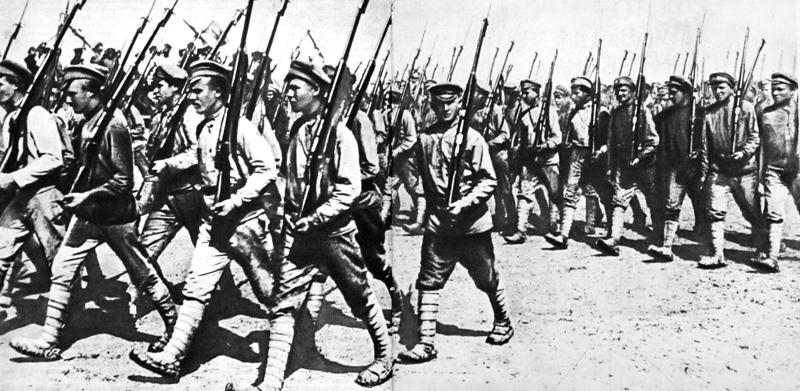
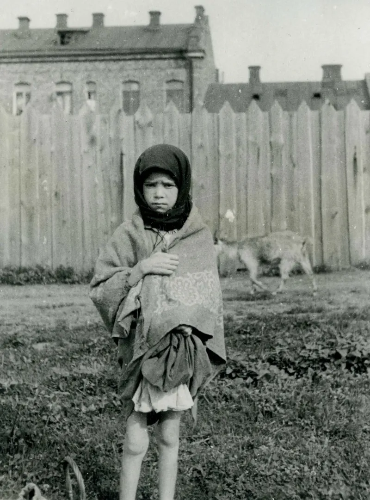

---------------------------------------------------------------------------------------------------------------
After centuries of Russian imperialist policies, in the 20th century Ukraine began reamerging again as a seperate entity from Russia with various levels of success. This dark time in human history, arguably the most destructive 50 year time frame ever, shows that the Ukrainian identity hasn't been washed away by the tide of history, and is here to stay.
World War I provided the backdrop for Ukraine's first modern attempt at independence. When the war broke out,
Ukrainian territory was split between two empires: the Russian Empire held sway over most of central and eastern
Ukraine, while Austria-Hungary dominated western territories such as Galicia. Both regimes were wary of growing
Ukrainian nationalism. As hostilities started in 1914, Russian officials moved to repress Ukrainian identity within
their empire; they prohibited Ukrainian-language publications, closed cultural institutions, and even imprisoned or
exiled leading Ukrainian activists.
As the Russian army moved into Austrian-held Galicia, they also attempted to eliminate local Ukrainian institutions
(like the Greek Catholic Church) and impose Russification, although the occupation was short lived.
Austro-Hungarian officials, for their part, did not trust the loyalty of Ukrainians: they suppressed suspected pro
Russian sympathizers, executing thousands amidst wartime turmoil
Briefly, the First World War plunged Ukraine into chaos, as imperial authorities intensified their repression of a
people whom they suspected might be in cahoots with the enemy. The scenario shifted drastically following the fall
of the Russian Empire. The Russian Revolution of 1917 resulted in the overthrow of the tsar and initiated a sequence
of new political liberties. In March 1917, Ukrainian intellectuals and politicians established the Central Rada
(Council), a representative body that subsequently proclaimed Ukraine's autonomy within a presumed democratic structure
of Russia.

Summary of the World War I era: Amidst the chaos of 1917–1921, Ukrainians waged a stubborn fight for independence,
establishing the UPR and WUNR, but these young states were overwhelmed by superior forces(as seems to be the pattern).
Russia's Bolsheviks, in particular, tried to reassemble Ukraine, driven both by ideology and by a geopolitical motivations
"There is no Russia without Ukraine," Bolshevik leader Leon Trotsky said in 1919
Throughout the war, Ukrainian leaders were forced to deal with shifting allegiances, first to Germany, then to Poland.
This created narratives of betrayal: in Moscow's eyes, the Ukrainians' appeals to Russia's foes (the Central Powers or
Poland) demonstrated that Ukrainian nationalism was a strong, "counter-revolutionary" movement. At the same time,
the Ukrainians themselves felt deceived or betrayed by such great allies(again), as realpolitik delivered Ukraine into foreign
rule once more. The future appeared uncertain: Ukrainians remembered broken promises and brutal repression, while the new
Soviet Russian government consolidated itself in Ukraine, having won the civil war. Thus came one of the darkest times in
Ukrainian history, one that we will not soon forget. The pre world war 2 period was marked by severe discrimination, Russification
and genocide in the form of the Holodomor, in which the Soviet state sold off grain stocks to the West for profit, knowing
that this would cause a famine which would kill millions. This is besides the horrors faced by all peoples of the soviet union,
including purges of the military and the intelectuals of the nation, mass gulag deportation, work camps, etc. History sees Hitler
as the most evil in that time period, however I would throw Stalins hat in the ring any day.

After the Nazi-Soviet Pact in 1939, the USSR invaded and annexed Western Ukraine, claiming it was reuniting Ukrainian lands.
While some locals initially welcomed the Red Army, Soviet rule quickly turned brutal. The NKVD deported over 500,000 people
to Siberia and Central Asia, targeting Polish officials, Ukrainian intellectuals, clergy, and suspected nationalists.
Communities were shattered, and fear spread fast. In 1941, just before the German invasion, the Soviets executed thousands
of political prisoners across Ukrainian cities, including Lviv and Kyiv. These mass killings and years of repression soured
many Ukrainians against Soviet rule, influencing how they would react when the Nazis arrived.
When Germany launched its invasion in June 1941, Ukrainian lands were quickly overrun. Some in Western Ukraine viewed the
Germans as potential liberators, hoping they’d support independence. Nationalists from the OUN, led by Stepan Bandera,
declared a Ukrainian state in Lviv, but the Nazis rejected it. Bandera and his allies were arrested, and Nazi occupation
proved just as violent. Ukraine was turned into a colony, millions were deported for forced labor, entire villages were
destroyed, and 1.5 million Jews were murdered in the Holocaust. Meanwhile, Ukrainian partisans fought both Nazi and Soviet
forces in a desperate struggle for autonomy, but by 1944, Soviet control was reimposed, with renewed crackdowns that would
last long after the war ended.